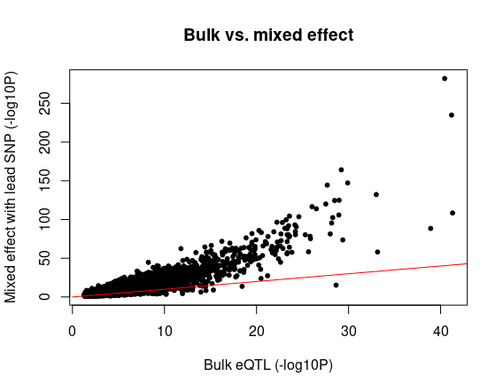

eQTL_glimix
Lifan Liang
2024-03-21
Last updated: 2024-06-27
Checks: 2 0
Knit directory: neuron_stim_eQTL100/
This reproducible R Markdown analysis was created with workflowr (version 1.7.0). The Checks tab describes the reproducibility checks that were applied when the results were created. The Past versions tab lists the development history.
Great! Since the R Markdown file has been committed to the Git repository, you know the exact version of the code that produced these results.
Great! You are using Git for version control. Tracking code development and connecting the code version to the results is critical for reproducibility.
The results in this page were generated with repository version f7d6213. See the Past versions tab to see a history of the changes made to the R Markdown and HTML files.
Note that you need to be careful to ensure that all relevant files for
the analysis have been committed to Git prior to generating the results
(you can use wflow_publish or
wflow_git_commit). workflowr only checks the R Markdown
file, but you know if there are other scripts or data files that it
depends on. Below is the status of the Git repository when the results
were generated:
Ignored files:
Ignored: .DS_Store
Ignored: .RData
Ignored: .Rhistory
Ignored: data/.DS_Store
Ignored: data/single_group_ctwas/.DS_Store
Note that any generated files, e.g. HTML, png, CSS, etc., are not included in this status report because it is ok for generated content to have uncommitted changes.
These are the previous versions of the repository in which changes were
made to the R Markdown (analysis/eQTL_glimix.Rmd) and HTML
(docs/eQTL_glimix.html) files. If you’ve configured a
remote Git repository (see ?wflow_git_remote), click on the
hyperlinks in the table below to view the files as they were in that
past version.
| File | Version | Author | Date | Message |
|---|---|---|---|---|
| Rmd | f7d6213 | Lifan Liang | 2024-06-27 | wflow_publish(c("analysis", "docs", "data")) |
| html | f7d6213 | Lifan Liang | 2024-06-27 | wflow_publish(c("analysis", "docs", "data")) |
| html | abd45a3 | Lifan Liang | 2024-05-16 | Build site. |
| Rmd | d8f1855 | Lifan Liang | 2024-05-16 | wflow_publish(c("analysis", "data", "docs")) |
| html | d8f1855 | Lifan Liang | 2024-05-16 | wflow_publish(c("analysis", "data", "docs")) |
| html | f3ff2d0 | Lifan Liang | 2024-04-29 | Build site. |
| Rmd | 63ff50e | Lifan Liang | 2024-04-29 | wflow_publish(c("analysis", "docs")) |
| html | 63ff50e | Lifan Liang | 2024-04-29 | wflow_publish(c("analysis", "docs")) |
| html | 7eef927 | Lifan Liang | 2024-04-25 | Build site. |
| Rmd | f1b144a | Lifan Liang | 2024-04-25 | wflow_publish(c("analysis", "docs")) |
| html | 929b170 | Lifan Liang | 2024-04-25 | Build site. |
| Rmd | 01ad2da | Lifan Liang | 2024-04-25 | wflow_publish(c("analysis", "docs")) |
| html | 1e7c84d | Lifan Liang | 2024-04-25 | Build site. |
| Rmd | 6904664 | Lifan Liang | 2024-04-25 | wflow_publish(c("analysis", "docs")) |
| html | 01fabbc | Lifan Liang | 2024-04-25 | Build site. |
| Rmd | df91c6d | Lifan Liang | 2024-04-25 | wflow_publish(c("analysis", "docs")) |
| html | c57a15c | Lifan Liang | 2024-04-17 | Build site. |
| Rmd | 55ff8e4 | Lifan Liang | 2024-04-17 | wflow_publish(c("analysis", "docs")) |
| html | 55ff8e4 | Lifan Liang | 2024-04-17 | wflow_publish(c("analysis", "docs")) |
| html | 1b438e1 | Lifan Liang | 2024-04-04 | Build site. |
| Rmd | 25c360f | Lifan Liang | 2024-04-04 | wflow_publish(c("analysis", "docs")) |
| html | 25c360f | Lifan Liang | 2024-04-04 | wflow_publish(c("analysis", "docs")) |
| html | 4ae5cad | Lifan Liang | 2024-04-03 | Build site. |
| Rmd | 600a88f | Lifan Liang | 2024-04-03 | wflow_publish(c("analysis", "data", "docs")) |
| html | 600a88f | Lifan Liang | 2024-04-03 | wflow_publish(c("analysis", "data", "docs")) |
| html | 16cc513 | Lifan Liang | 2024-03-21 | Build site. |
| Rmd | 5860083 | Lifan Liang | 2024-03-21 | wflow_publish("analysis") |
Introduction
This page introduces how to adapt a python package, “glimix_core”, to fit the individual random effect shared across 9 conditions (3 timepoints by 3 cell types).
Estimating individual random effects with lead variant
Given the lead variants for each gene from the eQTL results above, we first estimated fixed effects of covariates and individual random effects with the following model:
\[ y = G\beta + X\mu+ \epsilon \] where \(G\) is the genotype of the corresponding lead variant. \(X\) includes all the covariates and the offset, \(\mu\) is the fixed effects, and \(\epsilon\) follows the same definition as in the section above.
Then we regressed out covariates based on the fixed effect estimated and the model and fixed \(v_0\) and \(v_1\) estimated from the model. This time, we observed individual random effect reduced a lot compared to noise.
Association testing
Null model, alternative model, and likelihood ratio testing are identical to previous precedure except the the ratio of the random effects are fixed beforehand. We continue to use Beta approximation to obtain adjusted P values for each gene.
Below is the scatter plot of the adjusted P values with Beta approximation (Y axis) and empirical P values (X axis) on the scale of %-log10$. Although a little too stringent, Beta approximation is quite accurate at the tail.
Instead of Storey’s Pi in the previous approach, we performed Benjamini-Hochberg for FDR control. Genes with FDR < 0.05 is considered eGenes. Overall we identified 8462 eGenes, around 700 eGenes more than the bulk approach.
.png)
The scatter plot of P values shows linear mixed model has higher power than bulk.

Comparing with fixed effect model
We used the same normalized expression and covariates as input for matrixeQTL, so as to investigate the role of individual random effects. It seems individual random effect is competing with genetic effects. The increased power compared to bulk is due to the increased sample size by stacking all conditions.
For genes with less than 1% individual random effects. Mixed effect model and fixed effect model have highly correlated nominal P values.
For genes with more than 1% individual random effects. Mixed effect model has lower nominal P values than fixed effect model. It seems by pretending we have 824 independent samples, power would be greatly increased. However, correlattion caused by repeated measurement of the same individuals would confound genetic effects. Although most repeated measurement correlation are already captured by genotype PCs and expression PCs.
Another minor issue could be the permutation in matrixeQTL did not preserve individual structrure. Hence FDR is not stringent enough.